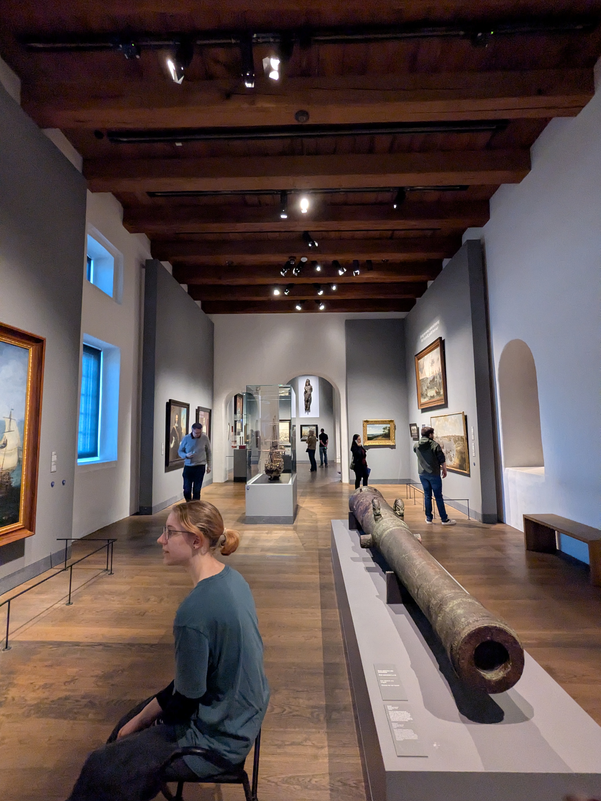
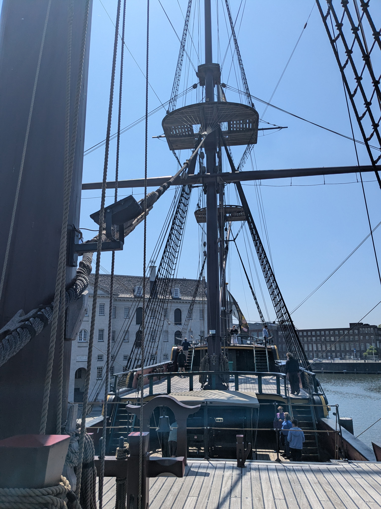

Student Autonomy
Museums

During my time in Amsterdam I visited three Museums in Total.
...in a single day.
Admittedly, not my brightest moment, but I didn't exactly plan my time in Amsterdam. I went
in with the Mindset of "I'll see who goes where and join wherever I like". Pretty free approach,
did give me a light headache in the end though. A Positive of this was that I usually went with
people I liked, and had a great time in general with no rush (since there was always at least
one person also taking notes for their project). Below I will quickly present the Museums first,
how it utilized the concept of Learners Autonomy, whether I liked it and how effectively I think
it utilized the learners Autonomy concept.
The Tulip Museum
The
tulip Museum is a lovely little Museum in Amsterdam all about a flower, the tulip~.
This was the first Museum I visited early on, and the one which I had the most attention for.
There were six exhibitions in total, all about the origin of the tulip, the crash of the tulip
market and todays Tulip market. There were a lot of different presentation types I encountered.
Hidden Drawers, Little dark boxes you had to turn on, a book to flip through, there was even
a song about the Tulip Market crash! I made a couple of photos I'll show off here in a carouselle.
To look thorough just klick the little circles! :D


The most prominent supports for Autonomy were:
- Do or not do?
The choice in whether or not the given topic interest you, with the option to return if you change your mind. (Aka. Learning at your own Pace)
- Reveal Information?
On multiple occasions there were information slippets "hidden". Behind a drawer with an image once, another time the lights had to be turned on to observe the information. You had to figure that out yourself, decide whether to turn on the light, to turn the page.
I personally enjoyed the Museum a lot. Surprisingly, while I enjoyed the fourth Exhibition the
most, my group disagreed largely, most picking the second one as their favourite.
As for it's efficiency, considering A museum doesn't exactly have a strict path or task unless
you give yourself one, I'd say it is a high level of autonomy, easily floating along the lines
of proactive autonomy.
The Maritime Museum

The
Maritime Museum was admittedly not my favourite. It was a huge Museum about Amsterdam as a port
city in history, and general Boat stuff. We visited two Exhibitions with my group.

One exhibition was set up like an Art Galery, with a lot of Paintings depicting various ship battles where Amsterdam participated. This Exhibition was incredibly boring. A lot of the time you were standing infront of an Image and reading, or Sitting infront of an image and reading. While this is fine, it resembles very much front teaching lessons in a way. There was little to interact with, you mostly observed or listened, depending on whether you got the Audio guide or not.
The other exhibition we visited was a Huge ship. I'm not joking, they literally restored a whole ship and made it into an attraction you could walk through. This was the polar opposite of the previous Exhibition. There was a lot to interact with. You could touch everything, you could run around, truly I liked this. However, there was basically no information being conveyed aside from that. There were no Plates with text, from what I saw nobody was wearing an Audio guide, the only information that was given to us was inform of two text plates by the entrance. Which felt lackluster to be honest.Now I feel like this is a good time to admit my bias. At the point of my visit I was already tired. My attention span was in hell and we didn't even see half of what the museum offered due to time constraints. Nontheless, since the experience I had was more akin to a traditional museum, I still think it is valuable as a comparison. Technically, the Museum gave you full Autonomy. You had your choice in going wherever you want and learning whatever you want. But it didn't make me curious about the topic. As someone who is only remotely interested in the seas, I picked up on the general vibe. Amsterdam was an Important Port city, participated in a lot of Ship conflicts and made itself rich off of trade. But unlike with the Tulip Museum, I won't be able to call out a certain fact off the top of my head. I didn't internalize the information like I did there. Again, this might be due to my lack of energy, but I think the "teaching" method is also at fault. It seemed like there was barely any balance between only showing and only interracting, which isn't something you should strive for if your goal is to teach someone something.
As for what types of Autonomy the Maritime museum was displaying, I'd sort it into passive autonomy based on my experience.
The Cheese Museum
The Cheese museum was incredibly small, and mostly concentrated in a single room.
I wasn't sure whether to include it here as an addition, since the Museum is more of an
afterthought to a small Cheese shop, but it was relevant to some of my classmates, so
why not include it here too.


The first sight of the Museum confused me quite a bit to be honest,
because it differs quite a lot from the typical
museum set up I am used to. It was lacking the plaques of text,
opting instead for qr codes you could scan to read.
And while I am usually not opposed to modernizations,
this felt pointless and added more friction.
I did mention adding friction and peaquing interest
before as a good way to engage a student, but this lacked in the
interest department. Usually you can look at something and go
"i want to learn more about it!", but especially because
the information on the subject was behind a qr code,
you never really got the chance to get a glance at it. The element
of interest was entirely missing.
Then again, if you knew what you were interested in, it was quite easy to
have a good experience in this museum. My friends were interested in the making process
of cheese, so when they fist saw the exponat relating to the making of cheese, they were
immediately interested and willing to look. This museum kind of expected you to be a cheese
enthusiast before you walked in.
This kind of translates into a problem schools have as well. Students from all different
walks of life might be more or less interested in a certain topic, but if you design a
lesson only for the enthusiasts you will loose the people who don't yet know they like the
topic.
Common Grounds
Honestly, it was difficult to find anything remotely similar in these experiences aside from the commonality of "being a museum". However, I did find some thigns.
- All of the Museums had no clear direction. You had to see what you were interested in, and engage with it in some way.
- All of the Museums were in some way flawed in their execution however. Some were clearly intended for enthusiasts, while others stirred too ambitions to actually grab my interest.
- The Reliance on prior Enthusiasm was hard to overlook. While some museums grabbed my attention easier than others, they still relied on you being already interested in the topic in a way.